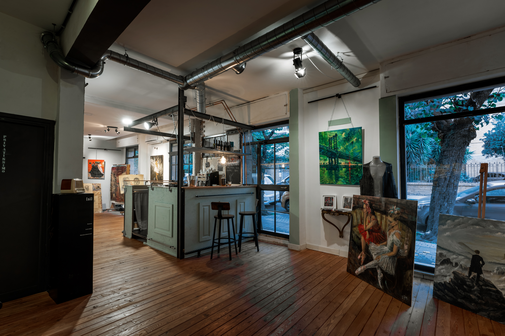
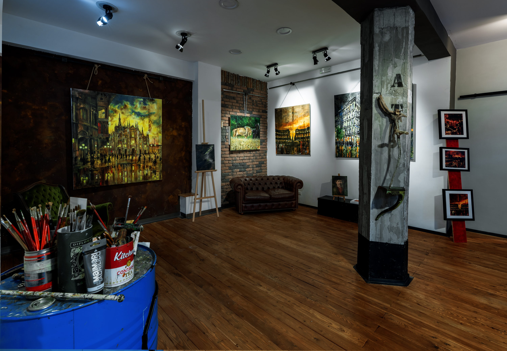

Spazio di Luce, Materia e Pensiero
L'inizio e la fine di un'emozione da vivere al centro. Atelier d'artista, catalogo permanente e luogo aperto all'incontro culturale.
L'Artista & La Galleria
Il demone creativo, il tempo ritrovato e l'equilibrio tra rigore e libertà.
Il sogno di una Galleria d'Arte
Ho iniziato a dipingere dopo i trent’anni inseguendo un “demone” che doveva sfogarsi in qualche maniera: un affare privatissimo, non procrastinabile e non risolvibile in facili compromessi. Senza mentori, da autodidatta, con l'unico bisogno di trasmettere un sentimento autentico attraverso la materia pura.
Dentro di me palpitano da sempre due anime: da un lato la parte razionale, educata al rigore professionale, al rispetto delle regole, alla sostenibilità dei processi e alla precisione del fare; dall'altro lato c'è Alfie, il mio alter ego istintivo che rompe quegli schemi, che vede poesie a colori ovunque e che mi ricorda costantemente che il vero valore oggi è il tempo che arricchisce l'anima.
La ArT Gallery nasce da questo viaggio: ore di calce, cemento, polvere e mani sporche di fatica per strappare un luogo al tempo e trasformarlo in uno spazio etereo dove raccontarsi, condividere cultura e rigenerare lo spirito. Un impegno tangibile che sposa la sostenibilità non come etichetta, ma come cura della materia, salvaguardia del tempo umano e rispetto dell'ambiente che abitiamo.
Opere Pittoriche
Percorsi visivi divisi tra materia pura, indagine figurativa e architetture urbane.
Poesie & Pensieri
Raccolta completa di versi, aforismi e considerazioni intime sulla pittura.
Spazio Espositivo & Atelier
Atelier permanente in Via Cimone 72A e spazio culturale per mostre terze, eventi editoriali e laboratori.
La ArT Gallery riserva costantemente i propri ambienti all'accoglienza di progetti curatoriali indipendenti, mostre personali e collettive di altri artisti, reading, concerti d'autore e presentazioni. Uno spazio raccolto e metropolitano caratterizzato da parquet in legno naturale, illuminazione tecnica orientabile a binario e pareti allestibili per grandi formati.

Atelier, vetrate su strada e area accoglienza

Sala espositiva principale, pareti attrezzate e binari luce
Cronologia Eventi & Mostre Ospitate
POEMPROMPTS: Tragicommedia dell'algoritmo – Marita Bosco
Workshop esperienziale per Rome Future Week sul rapporto tra intelligenza artificiale, linguaggio umano ed emozione poetica.
Oltre il Rumore – Lorenzo Accolla
Mostra personale curata da Walk of Ward Entertainment Events, con musica dal vivo e sessioni d'incontro nel fine settimana.
Nei miei occhi – Franco Giusti
Mostra fotografica d'autore dedicata a sguardi, ritratti intensi e suggestioni visive urbane.
Cristalli & Quadri – Tomoyo Haneishi
Esposizione di pittura e creazioni materiche con cristalli (a_kapo by T.H.) dell'artista romana-giapponese Tomoyo Haneishi.
Disabilità Controcorrente – Salvatore Cimmino
Presentazione editoriale (Alpes) e incontro con l'autore sul tema del diritto universale alla partecipazione sociale e culturale.
Il Rumore dell'Anima – Sabrina Berni
Personale di opere materiche e pittura gestuale densa di chiaroscuri e contrasti.
Sinfonie Astratte – Rassegna d'Arte Contemporanea
Direzione artistica di Tiziana Monoscalco e testo critico di Alfio Borghese; performance musico-pittorica di Maurizio Fioretti.
Mostra Personale – Daniele Tibo
Esposizione personale dedicata alla sperimentazione formale e al colore materico su tela.
La Voragine – Corso di Scrittura con Diana Ligorio
Laboratorio intensivo di cinque incontri di scrittura immersiva circondati dalle opere della galleria.
Nonostante tutto… – Romeo Albini
Personale a cura di Craving Art: pittura figurativa su supporto grezzo di tela di juta.
Dell'essere e del corpo – Fabio Palazzone
Esposizione a cura di Craving Art sull'anatomia, l'intimità espressiva e la fragilità della materia corporea.
I mostri della ragione – Colette Rodriguez Marcano
Personale pittorica: un'intensa danza tra demoni interiori e complessità dell'animo femminile.
I Colori di Mimmo – Retrospettiva Mimmo Gristina
Retrospettiva delle opere realizzate tra il 1974 e il 1982 dall'artista ritrovato.
Da Narni all'Argentina negli anni Trenta – Aldo d'Ormea
Mostra fotografica patrocinata da Ambasciata Argentina, Società Geografica Italiana, Città di Narni, IILA e Italia Nostra; intervento dell'Ambasciatore Gherardo La Francesca.
Fino all'ultimo battito – Tiziana Russo
Presentazione letteraria del romanzo condotta con la partecipazione della giornalista Stella Colucci.
Spettacoli Evocativi Luminosi – Giuseppe Capogna
Personale dedicata all'equilibrio cromatico, alla luce e all'espressività geometrica.
Dipinti Astratti – Lucio Spina
Esposizione personale di geometrie astratte con introduzione del pubblicista Calogero Rotondo.
Scordami Live – Gianluca Monaco & Personale Tramutoli
Serata d'arte e canzone d'autore: concerto acustico dal vivo tra le opere della galleria.
Opening & Vernissage ArT Gallery
Inaugurazione ufficiale della sede espositiva e dell'atelier d'artista in Via Cimone 72A a Roma.